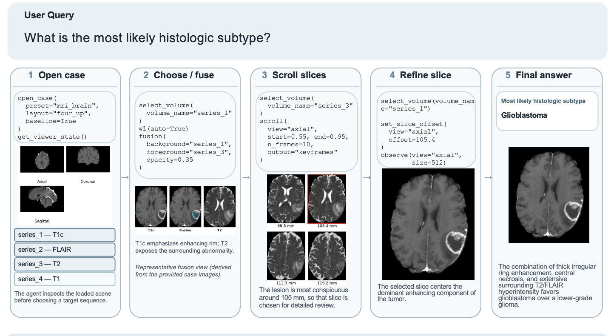
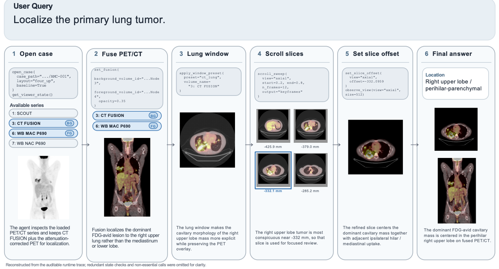

Longitudinal Analysis
Comparison across timepoints to inspect tumor size and lesion extent within a full-study workflow.
Brain tumor localization and differentiation with an auditable viewer trace.
Comparison across timepoints to inspect tumor size and lesion extent within a full-study workflow.
The agent adjusts the view until the lesion becomes the most conspicuous target for inspection.
A representative failure mode showing how the interaction chain breaks when segmentation is unreliable.



@misc{shen2026medopenclawauditablemedicalimaging,
title={MedOpenClaw: Auditable Medical Imaging Agents Reasoning over Uncurated Full Studies},
author={Weixiang Shen and Yanzhu Hu and Che Liu and Junde Wu and Jiayuan Zhu and Chengzhi Shen and Min Xu and Yueming Jin and Benedikt Wiestler and Daniel Rueckert and Jiazhen Pan},
year={2026},
eprint={2603.24649},
archivePrefix={arXiv},
primaryClass={cs.CV},
url={https://arxiv.org/abs/2603.24649},
}